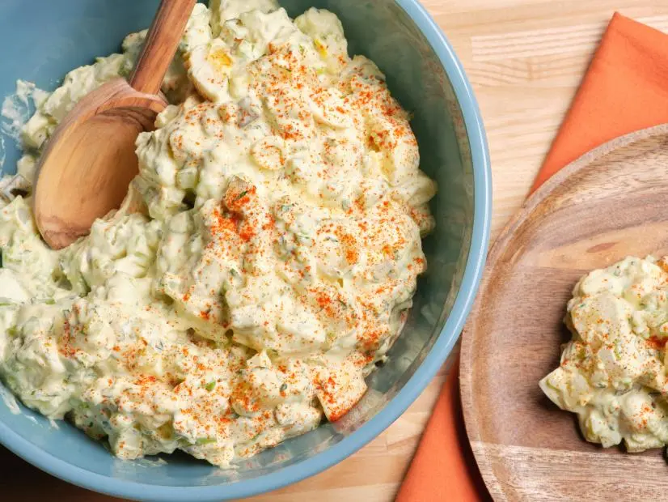

Source of Info
The Best American Potato Salad:

Ingredients:
- 2 pounds russet potatoes, peeled and cut into 1-inch chunks
- Kosher salt and freshly ground black pepper
- 2 tablespoons apple cider vinegar
- 3 large eggs
- 1 cup mayonnaise
- 1/4 cup sour cream
- 1/3 cup chopped dill pickles, plus 2 tablespoons brine
- 2 tablespoons yellow mustard
- 1/2 teaspoon sugar
- 3 stalks celery, chopped
- 4 scallions, thinly sliced
- 1/4 cup chopped fresh parsley
- Paprika, for topping
How to make:
-
Put the potatoes in a large saucepan; cover with cold water and season with 1 teaspoon salt. Bring
to a simmer and cook until tender, 10 to 12 minutes. Drain and transfer to a large bowl. Add the
vinegar and 1/2 teaspoon salt; toss. Let cool slightly, about 10 minutes.
-
Meanwhile, put the eggs in a medium saucepan and cover with cold water. Bring to a boil, then remove
from the heat and let sit, covered, 10 minutes. Drain the eggs and cover with ice water to cool;
peel, chop and set aside.
-
Whisk the mayonnaise, sour cream, pickle brine, mustard and sugar in a small bowl. Stir in the
pickles, celery, scallions and parsley. Spoon the mayonnaise mixture over the potatoes and mix well.
Season with salt and pepper. Add the hard-boiled eggs and gently stir to combine. Cover and
refrigerate at least 2 hours or overnight. Sprinkle with paprika just before serving.